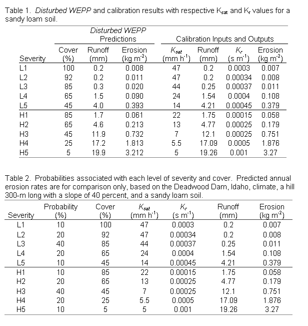
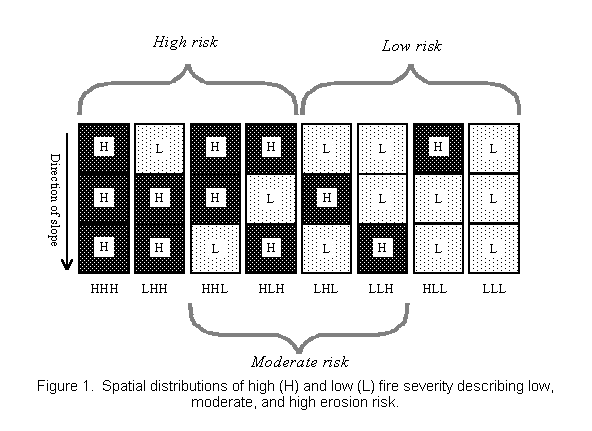
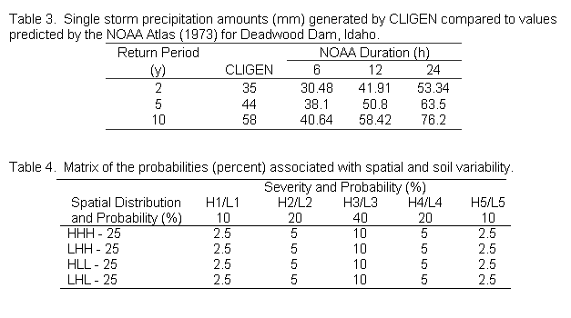
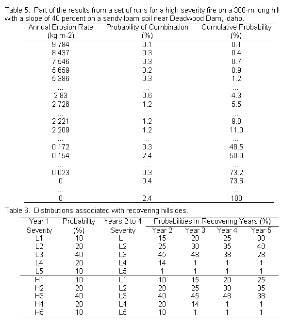
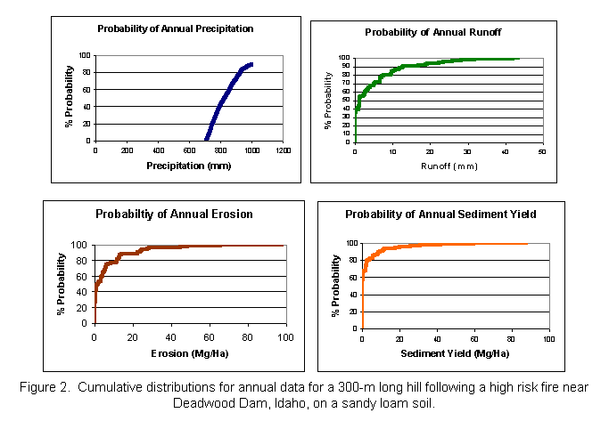
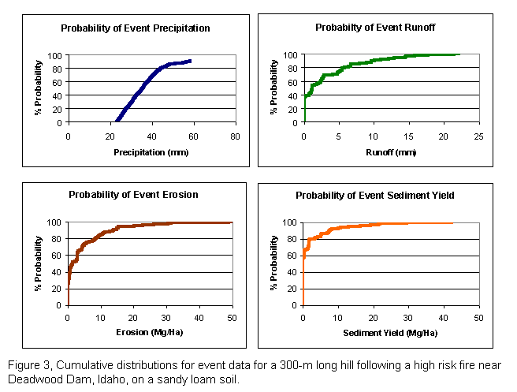
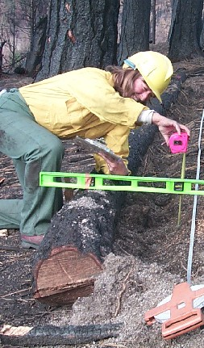
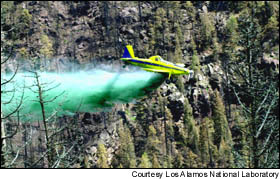
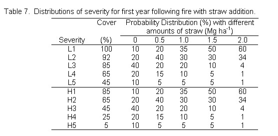
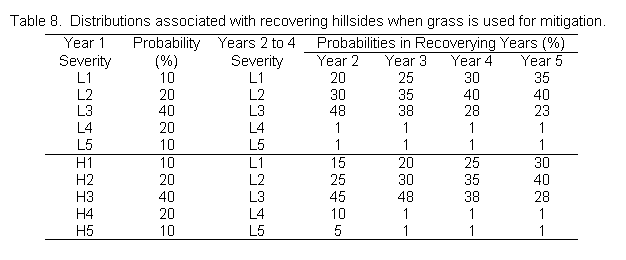

| USDA Forest Service | Rocky Mountain Research Station | Moscow FSL | Soil and Water Engineering |
|---|
A Probabilistic Approach To Modeling Erosion for Spatially-Varied ConditionsWilliam J. Elliot, Peter R. Robichaud, David E. Hall, Christopher O. Cuhaciyan, Frederick B. Pierson, Peter M. Wohlgemuth |
Abstract
In the years following a major forest disturbance, such as fire, the erosion rate is greatly influenced by variability in weather, in soil properties, and in spatial distribution. This paper presents a method to incorporate these variabilities into the erosion rate predicted by the Water Erosion Prediction Project model. It appears that it is not necessary to describe both the soil and the vegetation effects of the disturbance. Incorporating the vegetation effects on soil erodibility, and its associated variability, is sufficient--when combined with weather and spatial variability--to predict the probabilities of single storm and annual soil erosion rates in the years following the disturbance. By redefining the probability distributions of the soils, erosion during the recovering years, and impacts of mitigation on erosion can be determined from the same initial set of computer runs.Keywords: Modeling, WEPP, Forest Fire, Erosion, Variability
Authors
William J. Elliot, Project Leader, USDA Forest Service, Rocky Mountain Research Station, Moscow, Idaho.
Peter R. Robichaud, Research Forester, USDA Forest Service, Rocky Mountain Research Station, Moscow, Idaho.
David E. Hall, Computer Specialist, USDA Forest Service, Rocky Mountain Research Station, Moscow, Idaho.
Christopher O. Cuhaciyan, Research Assistant, Washington State University, Pullman, Washington.
Frederick B. Pierson, , Research Hydrologist, USDA Agricultural Research Service, NW Watershed Research Center, Boise, Idaho.
Peter M. Wohlgemuth, Research Geologist, USDA Forest Service, Pacific SW Research Station, Riverside, California.
Natural resource managers need tools to aid in predicting soil erosion following wildfires to estimate potential loss of onsite productivity, or potential offsite damage from sediment to aquatic ecosystems or other beneficial uses dependent on high-quality water. Most current erosion prediction tools were developed from agricultural erosion models, which are intended to provide long-term estimates of soil erosion rather than evaluate short-term risks. These models typically provide an "average" erosion value, and do not give any estimate of the likelihood of major upland erosion occurring.
Process-based erosion models may provide a means for evaluating complex distributions of disturbance for a number of possible weather sequences, but the effort to parameterize such models makes them unsuitable for widespread application. However, they can play a role in assisting researchers to analyze some of the interactions between erosion factors.
We are developing an interface to aid in the analysis of erosion prediction following fire, or a similar major disturbance, in forests and rangelands. This paper addresses a new method we are considering to incorporate the inherent variability associated with the predicted erosion rate, and how that variability is influenced by weather, spatial distribution of disturbances, and variability in soil erodibility.
Once a site has recovered, rainfall rates in excess of 50 mm hr-1 or total rainfall amounts greater than 100 mm within a day or two are necessary before any significant upland erosion will occur. This seldom happens in many forested areas.
The combined effects of a mosaic in fire severity and soil variability result in spatial variability of soil erodibility that has some degree of predictability, but a great deal of natural variability. Spatial variability analyses have shown that following some fires, there are definite trends in degree of fire severity, whereas, the variability is evenly distributed on a hillslope or watershed following other fires (Robichaud and Miller 2000).
The WEPP model can be run either for single storms, with initial conditions such as soil water content, surface cover and soil erodibility specified for the storm, or in continuous mode where these values are automatically altered daily for a number of years of daily weather. Output options from WEPP include average annual runoff and erosion rates, annual erosion rates for the length of run, or event runoff and erosion rates for every runoff event during the period of simulation (Flanagan and Livingston 1995). The WEPP model has been applied to forest conditions with reasonable results (Elliot and Foltz 2001), and the database to support the model is increasing (Elliot and Hall 1997).
Elliot et al. (2000) have develop simplified interfaces to the WEPP model for forest conditions. One of the features of their interface for predicting erosion after fire (Disturbed WEPP) is that it gives both an "average annual" erosion rate, and the annual runoff and erosion rates associated with several return periods. The interface has two soil conditions related to fire, low severity and high severity. In addition, the user must specify the amount of surface cover. The Disturbed WEPP interface also includes a calibration feature to aid the user in ensuring the desired amount of surface cover is calculated by the vegetation routines in the WEPP model.
To develop a data set of soil erodibility values, we first needed to know the relationship between cover, runoff, and erodibility for low and high severity conditions. We had developed an Internet interface (Disturbed WEPP, Elliot et al. 2000) which simplified parameterizing the WEPP model to generate the desired amount of cover. With the Disturbed WEPP interface, we calibrated the low severity and high severity vegetation conditions for a number of cover amounts (L1-L5 and H1-H5 in Table 1). We ran the WEPP model for a typical forest climate (Deadwood Dam, Idaho) and typical hillslope length (300 m) and steepness (zero at the top, 40 percent average, and 10 percent at the toe). We selected the sandy loam-textured forest soil. Using the WEPP MS DOS interface, we then developed a WEPP vegetation file to grow a minimum amount of vegetation, and calibrated the hydraulic conductivity in the WEPP soil file to give the same runoff, and the rill erodibility to give the same sediment yield as observed with each of the Disturbed WEPP conditions. The results of this calibration are presented in Table 1.


To determine the probabilities associated with annual climates, a run for "typical" conditions (L3/H3) can be carried out, for 100 years of generated climate. The annual results can be ordered by erosion rate, and the fifth, tenth, twentieth, fiftieth, and seventy-fifth greatest values selected. The probabilities associated with each of these years will be 7.5, 7.5, 20, 27.5, and 37.5 percent, respectively. Single storms will be selected for the 20-, 10-, 5-, and 2-year erosion events. The probabilities associated with these events are 7.5, 7.5, 20, and 65 percent, respectively. Once the years necessary for these events are identified, only these years will be needed for the remaining combination of soil and spatial variabilities as described in the next section.
The precipitation, runoff, erosion, and sediment yield, by event and by year, are read from the event and annual WEPP output files. The results are linked to their probabilities, and the results sorted by the magnitude of the predicted value (precipitation, runoff, etc.). Table 5 gives an example of such results. From Table 5, there is about a 1 percent chance that erosion will exceed 5.5 kg m-2, a 5 percent chance it will exceed 2.8 kg m-2, a 74 percent chance that any erosion will occur, etc. The distributions for the annual results are shown in Figure 2, and for single events in Figure 3.
Precipitation occurs every year, and every event, so the values where the curve crosses the x-axis in Figures 2 and 3 are the minimum annual precipitation value and minimum 24-h precipitation necessary to cause runoff for these conditions. Annual and event runoff, erosion, and sediment delivery values are skewed. The points where the curves depart from the y-axes are the probabilities that the values are non-zero. Although not shown in these results, we noted during data manipulation that the largest values for runoff, erosion, and sediment yield did not necessarily correspond to the highest value of precipitation. For example, the ten-year return period precipitation event (which has the highest amount of precipitation) had no associated runoff or sediment yield.

To model the variability associated with recovery, a single set of low severity runs is required, with the probability distributions changing each year. The runs are already made as part of the first year analysis. The probabilities associated with the completed runs change in the recovering years. An example of this proposed method for modeling recovery by changing the probability distributions is presented in Table 6.

where Capacity is the maximum sediment stored (Mg ha-1), Dia is the mean log diameter (m), Spacing is the spacing on the hillslope (m) and Slope is the slope steepness (m m-1). We have observed that only about half of the eroded sediment is collect behind logs, and the other half is carried with the runoff to the channels (Robichaud and Brown 1999). Once the storage capacity predicted by equation 1 is full, then all eroded sediments will leave the hillside. For example, if equation 1 predicted a capacity of 3 Mg ha-1, and the predicted erosion was 2 Mg ha-1, then half the sediment, or 1 Mg ha-1 would be collected, and 1 Mg ha-1 would be delivered to the bottom of the hill. If an erosion rate of 8 Mg ha-1 were predicted, then the full capacity of 3 Mg ha-1 would be stored and 5 Mg ha-1 would be delivered.
(1)

Figure 4. Measuring the sediment storage capacity behind a contour felled log.
Figure 5. Aerial hydroseeding adding both seed and mulch following the severe fire near Los Alamos, NM in 2000 (Courtesy Los Alamos National Lab).

where Crf is the fraction of the soil covered by the residue, Mf is the amount of residue (kg m-2) and cf is a coefficient that depends on the material ( = 6.4 for wheat straw; Flanagan and Livingston 1995). This relationship can be used to adjust the probability distributions presented in Table 6. For example, if a manager adds 500 kg ha-1 (0.05 kg m-2) to a site, from Equation 2, the cover would be about 27 percent. Adding this amount to the values in Table 6 leads to the revised distribution of erosion rates shown in Table 7. In the years following straw addition, the distributions in Table 6 are altered to reflect the increased groundcover. As the straw is decomposing, the effects of straw addition in year 1 will decline until there is no effect by year 3.
(2)

Elliot, W. J., and D. E. Hall. 1997. Water Erosion Prediction Project (WEPP) forest applications. General Technical Report INT-GTR-365. Ogden, UT: USDA Forest Service, Rocky Mountain Research Station. 11 p.
Elliot, W. J., D. L. Scheele, and D. E. Hall. 2000. The Forest Service WEPP interfaces. Paper No. 005021. St. Joseph, MI.: ASAE. 9 p.
Elliot, W. J., and M. Foltz. 2001. Validation of the FS WEPP Interfaces for Forest Roads and Disturbances. Paper No. 01-8009. St. Joseph, MI.: ASAE. 15 p.
Elliot, W. J., P. R. Robichaud and C. D. Pannkuk. 2001. A Probabilistic Approach To Modeling Erosion for Spatially-Varied Conditions. Proceedings of the Seventh Federal Interagency Sedimentation Conference, March 25 to 29, Reno, NV. VI-33 - VI-40.
Flanagan, D. C., and S. J. Livingston (eds.). 1995. WEPP User Summary. NSERL Report No. 11, W. Lafayette, IN: National Soil Erosion Research Laboratory, 131 p.
Laflen, J. M., W. J. Elliot, D. C. Flanagan, C. R. Meyer and M. A. Nearing. 1997. WEPP--Predicting water erosion using a process-based model. Journal of Soil and Water Conservation 52(2), 96-102.
McClelland, D. E., R. B. Foltz, W. D. Wilson, T. Cundy, R. Heinemann, J. Saurbier, and R. Schuster. 1997. Assessment of the 1995 and 1996 floods and landslides on the Clearwater National Forest. Part I: Landslide assessment. Missoula, MT: USDA Forest Service, Region 1. 52 p.
National Oceanic and Atmospheric Admin. (NOAA). 1973. NOAA Atlas 2, Volume V - Idaho. Precipitation-frequency Atlas of the Western United States, Available online at <https://www.wrcc.dri.edu/pcpnfreq.html>.
Nicks, A. D., L. J. Lane, G. A. Gander. 1995. Chapter 2. Weather Generator. In Flanagan, D. C., and M. A. Nearing, USDA-Water Erosion Prediction Project Hillslope Profile and Watershed Model Documentation. W. Lafayette, IN: USDA Agricultural Research Service, 2.1-2.22.
Robichaud, P. R. 1996. Spatially-varied erosion potential from harvested hillslopes after prescribed fire in the interior northwest. PhD dissertation, University of Idaho, Moscow. 219 pp.
Robichaud, P. R. 1998. Slate Point Field Site, Bitterroot N.F. West Fork R.D. Internal progress report. Moscow, ID:USDA Forest Service Rocky Mountain Research Station. 1 p
Robichaud, P. R., and R. E. Brown. 1999. What happened after the smoke cleared: Onsite erosion rates after a wildfire in Eastern Oregon. Revised (November 2000) In: Olsen, D. S., and J. P. Potyondy (eds.). Proceedings AWRA Specialty Conference: Wildland Hydrology, Bozeman, Montana. 419-426.
Robichaud, P. R., and S. M. Miller. 2000. Spatial interpolation and simulation of post-burn duff thickness after prescribed fire. Accepted for publication in the International Journal of Wildland Fire.
Robichaud, P. R., and T. M. Monroe. 1997. Spatially-varied erosion modeling using WEPP for timber harvested and burned hillslopes. Paper No. 975015. St. Joseph, MI.: ASAE, 8 p.
Robichaud, P. R., C. H. Luce, and R. E. Brown. 1993, Variation among different surface conditions in timber harvest sites in the Southern Appalachians. International Workshop on Soil Erosion, Proceedings. Moscow, Russia. West Lafayette, IN.: The Center for Technology Transfer and Pollution Prevention, Purdue University, 231-241.
Robichaud, P. R., J. L. Beyers and D. G. Neary. 2000a. Evaluating the Effectiveness of Postfire Rehabilitation Treatments. General Technical Report RMRS-GTR-63. Ft. Collins, CO: USDA Forest Service Rocky Mountain Research Station. 85 p.
Robichaud, P. R., W. J. Elliot, F. B. Pierson and P. M. Wohlgemuth. 2000b. Risk assessment of fuel management practices on hillslope erosion processes. In Neuenschwander, L. F., and K. C. Ryan, (technical eds.) Proceedings from the Joint Fire Science Conference and Workshop. June 15-17, 1999. Boise, ID. Moscow, ID: University of Idaho 58-65.
Elliot, W.J.; Robichaud, P.R.; Hall, D.E.; Cuhaciyan, C.O.; Pierson, F.B.; Wohlgemuth, P.M. 2001. A Probabilistic Approach To Modeling Erosion for Spatially-Varied Conditions. ASAE paper number 01-8006, presented at the 2001 ASAE Annual International Meeting, sponsored by American Society of Agricultural Engineers, Sacramento Convention Center, Sacramento, California, USA, July 30--August 1, 2001. St. Joseph, MI: ASAE. 16 p.